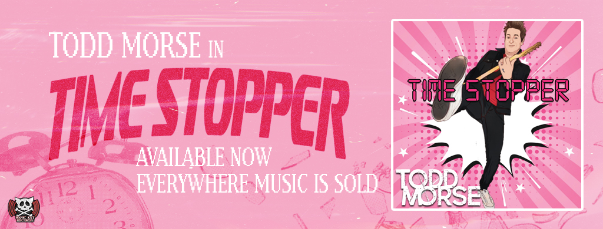
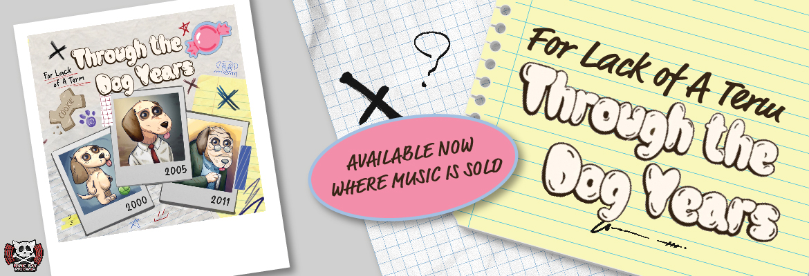

I owe you an apology: A Recovery Guide
I owe you an apology is an interactive book created to aid in the long journey that is recovering from an eating disorder. The book was created to act as a guide and companion through a long and lonely process of entering and committing to recovery. It fits right in your pocket so that it can travel with you and has a long chain belt that wraps around you, hugging you tightly and keeping you safe. I hope this acts as a little way to tell that voice it is not in charge. Recovery is possible and is worth it. Lift the weight off your head and let it hang on loosely. •.*~* PDF Download Here *~*.•

|
|

